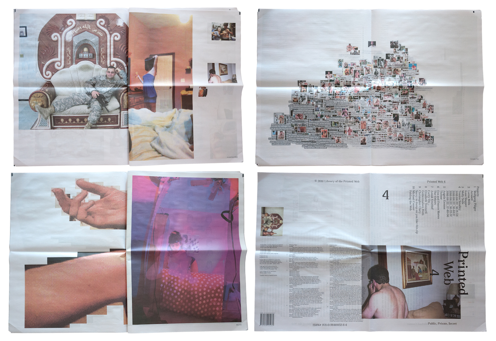
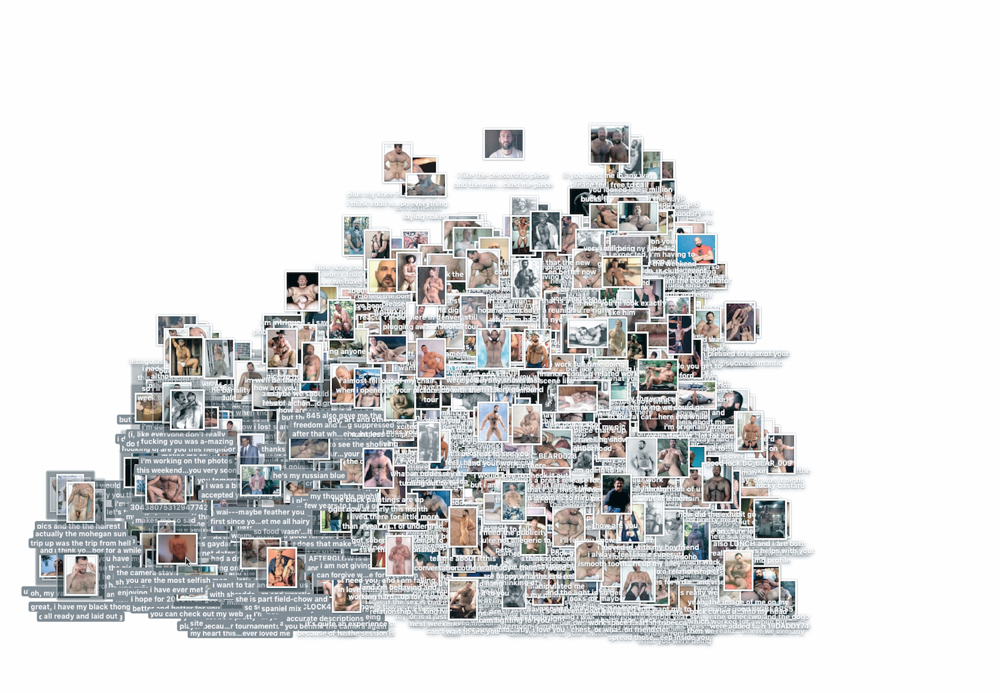

Printed Web 4: Public, Private, Secret (2016)

40 pages
Print-on-demand newsprint (first printing: 300)
14.75 in. x 20.5 in.
Commissioned by Charlotte Cotton, curator of “Public, Private, Secret” at International Center of Photography, NYC
Co-published by ICP and Paul Soulellis, Library of the Printed Web
Printed by Newspaper Club
ISBN 978-0-9840052-8-4


Contributors—Wolfgang Plöger, Lorna Mills, Molly Soda, Travess Smalley, Angela Genusa, Eva and Franco Mattes, Anouk Kruithof, Elisabeth Tonnard, Christopher Clary, Michael Connor

Download PDF